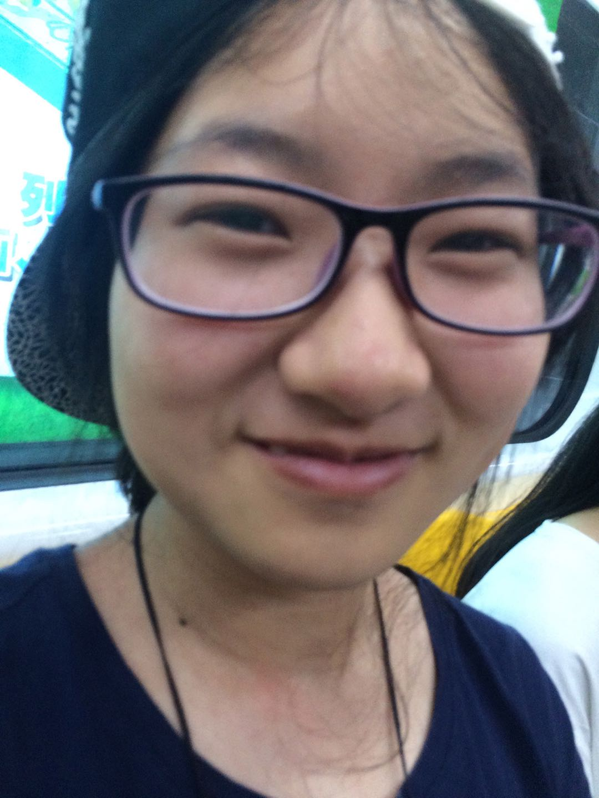

|

|
Zheng Zeng （曾铮）
| |
Email: zengzheng14@amss.ac.cn |
|
Biography
I am currently pursuing the Phd degree at the Academy of Mathematics and Systems Science, Chinese Academy of Sciences (AMSS) and University of Chinese Academy of Sciences (UCAS). My supervisor is Dr. Xiaohong Jia. Before that, I received my Bachelor's degree of mathematics from UCAS in 2018.
My research interest includes geometry processing, computer aided geometric design and machine learning.
Publications
Developable Surface Segmentation For CAD Models
Zheng Zeng,
Xiaohong Jia,
Liyong Shen,
Pengbo Bo
SIGGRAPH '21: Special Interest Group on Computer Graphics and Interactive Techniques Conference
|